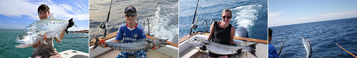

AndamanWater Sports
- Scuba Diving
- Snorkelling
- Fishing
Scuba Diving in Andaman
Scuba diving is the best option to see the life under the sea and ocean. Scuba diving is a form of underwater diving in which a diver uses a scuba set to breathe underwater. The majority of scuba divers enjoy diving for recreational purposes, just to enjoy the beauty that lives in the sea and ocean waters. For the beginners it is recommended to have a short class to get the knowledge for usage of equipment and defense techniques.
Diving At Andaman Islands
Andaman Islands is rich with underwater coral reefs and marine life. Diving in Andaman islands is a unique lifetime experience. The coastal water surrounding theses islands is the abode of one of the richest coral reef ecosystem is the world. The specialty is that, here the coral reefs and underwater formations are undamaged by human activity.
The islands are surrounded by fringing reefs, often several hundred meters wide and separated from the shore by a lagoon of similar width. There are also more steeply undulating hills of raven volcanic lava, which makes for some unusual diving. There are plenty of steeply sloping and shallow reefs suitable for snorkeling. Large pelagics are plentiful in these waters, as are a variety of sharks. Large schools of hammerhead often patrol the waters away from the reefs and Grey, White tip, Nurse and leopard sharks are found closer inshore. Silvertip and Ocean
Courses & Tariffs
Discover Scuba Diving : This is the basis Diving Course for First timers that allows to experience the underwater world. You will be educated on the basic breathing skills in shallow water and some theory to allow you to experience Scuba Diving. Our experienced Certified Divemasters and Instructors will help you experience breathing underwater and enjoy the coral reefs and Colourful rnarine lifes. In this course, the swimming skill is not required and minimum age limit is 10+ years.
| Diving Courses | Rates |
|---|---|
| Discover Scuba Diving (DSD) - 1 dive | Rs.4500.00 |
| Additional Dive with DSD | Rs.1500.00 |
| Day Diving (for certified divers only) - 2 dives/day | Rs.4500.00 |
| Night Dive (for certified divers only) | Rs.3000.00 |
Snorkeling is the practice of swimming / floating on or through a body of water with a minimum basic equipment that is dive mask, swimming fins, and a snorkel (breathing tube). Snorkeling is a most popular recreational activity. Through snorkeling one can enjoy the exotic view of underwater coral reefs and marine life. Snorkeling is simple and possible with anyone who have interest to view underwater coral reefs and marine life.
Snorkeling at Andaman Islands
Andaman Islands are rich with colourful coral reefs & marine file. The Islands of Andaman Group are surrounded by colourful coral reefs, fishes and other marine life and one can enjoy the view through. The Major Snorkeling sites in Andaman Islands are:
Jolly Buoy and Redskin Island :
Jollybuoy & Redskin Islands are the part of Mahatma Gandhi Marine national Park. Ferry for this islands are operating from Wandoor harbour. Permission required from Department of Forest and Environment to visit this Islands.
North Bay :
Ferry service is available from Rajiv Gandhi Water Sports Complex to visit this island. The journey is around 30 minutes by ferry.
Elephant Beach :
Elephant Island is one of the popular destination for snorkeling at Havelock Island. The boat journey is around 35 minutes from Havelock Harbour.
For more details : Call us at +91-77 188 777 40 or email us at info@metholidays.com
Seawalk At Andaman Islands
About SeaWalk : Sea Walk is like going for an underwater tour inside the reef, walking between corals, seeing variety of fish, and discovering the rich sea life underwater in the crystal clear blue water of the lagoon with an helmet with a transparent visor is placed on your head. A special apparatus allows normal breathing under the water. Life Guards assist in taking you underwater and accompany you throughout the walk to guarantee your maximum safety. This wonder experience can be enjoyed by everyone; you will not required Swimming and Diving skill. Experience the ultimate sensation where time stops, worries fade away and breathing underwater becomes possible, safe and easy... and a great opportunity to discover the underwater world from within, and make your fantasies come true.
At Andaman, you can enjoy this leisure activity at Port Blair and Havelock Islands. The minimum Age Limit is 10 Years.
For more details : Call us at +91-77 188 777 40 or email us at info@metholidays.com
Water Sports At Andaman Islands
While thinking about Andaman Islands, Water Sports comes in everyone mind. Rajiv Gandhi Water Sports Complex offers the facilities of water Sports at Andaman Islands like Water Scooters, Speed Boat rides, Rowing boats, para sailing, kayaks, paddle boats, Banana Ride, Sofa Ride, etc. The view options like Water Scooters, Speed Boat rides, kayaks, Banana Ride and Sofa Ride also available at Havelock Islands too.
For more details : Call us at +91-77 188 777 40 or email us at info@metholidays.com Enquiry
Sports Fishing At Andaman
Andaman Island is also one of the famous destination for Game fishing. Andaman Island is a paradise for fishing lovers with stunning locations, clean and Pristine Beaches and Coral Reefs. At Andaman, we serve Half and Full Day Packages for Fishing lovers with our experience teams. We operate our service at Port Blair & Havelock Island. We provides professional, prompt and reliable service in everything we do. We operate in an environmentally sustainable and responsible manner to ensure that all fish caught on board but not meant for immediate consumption are released in excellent condition. We encourage the use of barbless hooks, and make every effort to ensure every survival of every fish.Courses & Tariffs
| Duration | Charges | Anglers |
|---|---|---|
| One Full Day | Rs.28500.00 | 02 |
| One Half Day | Rs.15000.00 | 02 |
The Package Includes Lunch, Snacks & Soft Drink / Water Bottles
For More Details – Call us at +91 7718877740 or email us at info@metholidays.com
 Enquiry
Why book with us?
- Expert Assistance with Personal Touch
- Expert Assistance with Personal Touch
- Expert Assistance with Personal Touch
- Expert Assistance with Personal Touch
- Expert Assistance with Personal Touch